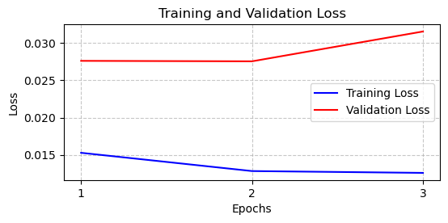

%%capture
!pip install skforecast
%%capture
!pip install sktime
# Libraries
# ==============================================================================
import os
#os.environ["KERAS_BACKEND"] = "torch" # 'tensorflow', 'jax´ or 'torch'
os.environ["KERAS_BACKEND"] = "tensorflow" # 'tensorflow', 'jax´ or 'torch'
import keras
import numpy as np
import pandas as pd
import matplotlib.pyplot as plt
from sklearn.preprocessing import MinMaxScaler
import skforecast
from skforecast.datasets import fetch_dataset
from skforecast.plot import set_dark_theme
from skforecast.ForecasterRnn import ForecasterRnn
from skforecast.ForecasterRnn.utils import create_and_compile_model
from skforecast.model_selection_multiseries import backtesting_forecaster_multiseries
from keras.optimizers import Adam
from keras.losses import MeanSquaredError
from keras.callbacks import EarlyStopping
import warnings
warnings.filterwarnings('once')
print(f"skforecast version: {skforecast.__version__}")
print(f"keras version: {keras.__version__}")
if keras.__version__ > "3.0":
print(f"Using backend: {keras.backend.backend()}")
if keras.backend.backend() == "tensorflow":
import tensorflow
print(f"tensorflow version: {tensorflow.__version__}")
elif keras.backend.backend() == "torch":
import torch
print(f"torch version: {torch.__version__}")
else:
print("Backend not recognized. Please use 'tensorflow' or 'torch'.")
---------------------------------------------------------------------------
ModuleNotFoundError Traceback (most recent call last)
Cell In[3], line 6
4 #os.environ["KERAS_BACKEND"] = "torch" # 'tensorflow', 'jax´ or 'torch'
5 os.environ["KERAS_BACKEND"] = "tensorflow" # 'tensorflow', 'jax´ or 'torch'
----> 6 import keras
8 import numpy as np
9 import pandas as pd
ModuleNotFoundError: No module named 'keras'
url = (
'https://raw.githubusercontent.com/saindata-bumi/webgis/refs/heads/main/datafull.csv'
)
#data = pd.read_csv(url)
data = pd.read_csv(url, sep=',', header=0, names=['waktu', 'SO2'])
data = data.set_index('waktu')
# Data preprocessing
# ==============================================================================
data
| SO2 | |
|---|---|
| waktu | |
| 2020-03-30 | 2.110 |
| 2020-03-31 | 3.075 |
| 2020-04-01 | 3.075 |
| 2020-04-02 | 3.075 |
| 2020-04-03 | -0.481 |
| ... | ... |
| 2024-09-15 | 3.580 |
| 2024-09-16 | 1.222 |
| 2024-09-17 | 1.105 |
| 2024-09-18 | 2.692 |
| 2024-09-19 | 12.693 |
1635 rows × 1 columns
end_train = "2023-03-26"
end_validation = "2024-05-13"
data_train = data.loc[:end_train, :].copy()
data_val = data.loc[end_train:end_validation, :].copy()
data_test = data.loc[end_validation:, :].copy()
Multi Step Univariate#
# Model creation
# ==============================================================================
series = ["SO2"] # Series used as predictors
levels = ["SO2"] # Target serie to predict
lags = 32 # Past time steps to be used to predict the target
steps = 5 # Future time steps to be predicted
model = create_and_compile_model(
series=data_train,
levels=levels,
lags=lags,
steps=steps,
recurrent_layer="LSTM",
recurrent_units=50,
dense_units=32,
optimizer=Adam(learning_rate=0.01),
loss=MeanSquaredError()
)
model.summary()
keras version: 3.6.0
Using backend: tensorflow
tensorflow version: 2.17.0
Model: "functional"
┏━━━━━━━━━━━━━━━━━━━━━━━━━━━━━━━━━┳━━━━━━━━━━━━━━━━━━━━━━━━┳━━━━━━━━━━━━━━━┓ ┃ Layer (type) ┃ Output Shape ┃ Param # ┃ ┡━━━━━━━━━━━━━━━━━━━━━━━━━━━━━━━━━╇━━━━━━━━━━━━━━━━━━━━━━━━╇━━━━━━━━━━━━━━━┩ │ input_layer (InputLayer) │ (None, 32, 1) │ 0 │ ├─────────────────────────────────┼────────────────────────┼───────────────┤ │ lstm (LSTM) │ (None, 50) │ 10,400 │ ├─────────────────────────────────┼────────────────────────┼───────────────┤ │ dense (Dense) │ (None, 32) │ 1,632 │ ├─────────────────────────────────┼────────────────────────┼───────────────┤ │ dense_1 (Dense) │ (None, 5) │ 165 │ ├─────────────────────────────────┼────────────────────────┼───────────────┤ │ reshape (Reshape) │ (None, 5, 1) │ 0 │ └─────────────────────────────────┴────────────────────────┴───────────────┘
Total params: 12,197 (47.64 KB)
Trainable params: 12,197 (47.64 KB)
Non-trainable params: 0 (0.00 B)
# Forecaster Creation
# ==============================================================================
forecaster = ForecasterRnn(
regressor=model,
levels=levels,
transformer_series=MinMaxScaler(),
fit_kwargs={
"epochs": 3, # Number of epochs to train the model.
"batch_size": 4, # Batch size to train the model.
"callbacks": [
EarlyStopping(monitor="val_loss", patience=5)
], # Callback to stop training when it is no longer learning.
"series_val": data_test, # Validation data for model training.
},
)
/env/lib/python3.10/site-packages/skforecast/ForecasterRnn/ForecasterRnn.py:229: UserWarning: Setting `lags` = 'auto'. `lags` are inferred from the regressor architecture. Avoid the warning with lags=lags.
warnings.warn(
/env/lib/python3.10/site-packages/skforecast/ForecasterRnn/ForecasterRnn.py:265: UserWarning: `steps` default value = 'auto'. `steps` inferred from regressor architecture. Avoid the warning with steps=steps.
warnings.warn(
# Fit forecaster
# ==============================================================================
forecaster.fit(data_train)
Epoch 1/3
264/264 ━━━━━━━━━━━━━━━━━━━━ 3s 8ms/step - loss: 0.0236 - val_loss: 0.0276
Epoch 2/3
264/264 ━━━━━━━━━━━━━━━━━━━━ 2s 6ms/step - loss: 0.0130 - val_loss: 0.0275
Epoch 3/3
264/264 ━━━━━━━━━━━━━━━━━━━━ 2s 6ms/step - loss: 0.0123 - val_loss: 0.0315
/env/lib/python3.10/site-packages/skforecast/utils/utils.py:1135: UserWarning: Series has no DatetimeIndex nor RangeIndex index. Index is overwritten with a RangeIndex.
warnings.warn(
# Train and overfitting tracking
# ==============================================================================
fig, ax = plt.subplots(figsize=(6, 2.5))
forecaster.plot_history(ax=ax)

# Prediction
# ==============================================================================
predictions = forecaster.predict()
predictions
/env/lib/python3.10/site-packages/skforecast/utils/utils.py:1197: UserWarning: `last_window` has no DatetimeIndex nor RangeIndex index. Index is overwritten with a RangeIndex.
warnings.warn(
/env/lib/python3.10/site-packages/skforecast/utils/utils.py:1197: UserWarning: `last_window` has no DatetimeIndex nor RangeIndex index. Index is overwritten with a RangeIndex.
warnings.warn(
| SO2 | |
|---|---|
| 32 | 2.965013 |
| 33 | 3.062690 |
| 34 | 3.235394 |
| 35 | 2.668518 |
| 36 | 3.128229 |
# Specific step predictions
# ==============================================================================
predictions = forecaster.predict(steps=[1, 3])
predictions
/env/lib/python3.10/site-packages/skforecast/utils/utils.py:1197: UserWarning: `last_window` has no DatetimeIndex nor RangeIndex index. Index is overwritten with a RangeIndex.
warnings.warn(
/env/lib/python3.10/site-packages/skforecast/utils/utils.py:1197: UserWarning: `last_window` has no DatetimeIndex nor RangeIndex index. Index is overwritten with a RangeIndex.
warnings.warn(
| SO2 | |
|---|---|
| 32 | 1.917009 |
| 34 | 2.490502 |
# Backtesting
# ==============================================================================
metrics, predictions = backtesting_forecaster_multiseries(
forecaster=forecaster,
steps=forecaster.max_step,
series=data,
levels=forecaster.levels,
initial_train_size=len(data.loc[:end_validation, :]),
metric="mean_absolute_error",
verbose=False,
refit=False,
)
Epoch 1/3
368/368 ━━━━━━━━━━━━━━━━━━━━ 4s 9ms/step - loss: 0.0130 - val_loss: 0.0281
Epoch 2/3
368/368 ━━━━━━━━━━━━━━━━━━━━ 3s 8ms/step - loss: 0.0121 - val_loss: 0.0294
Epoch 3/3
368/368 ━━━━━━━━━━━━━━━━━━━━ 3s 8ms/step - loss: 0.0121 - val_loss: 0.0304
/env/lib/python3.10/site-packages/skforecast/utils/utils.py:1135: UserWarning: Series has no DatetimeIndex nor RangeIndex index. Index is overwritten with a RangeIndex.
warnings.warn(
/env/lib/python3.10/site-packages/skforecast/utils/utils.py:1197: UserWarning: `last_window` has no DatetimeIndex nor RangeIndex index. Index is overwritten with a RangeIndex.
warnings.warn(
/env/lib/python3.10/site-packages/skforecast/utils/utils.py:1197: UserWarning: `last_window` has no DatetimeIndex nor RangeIndex index. Index is overwritten with a RangeIndex.
warnings.warn(
/env/lib/python3.10/site-packages/skforecast/utils/utils.py:1197: UserWarning: `last_window` has no DatetimeIndex nor RangeIndex index. Index is overwritten with a RangeIndex.
warnings.warn(
/env/lib/python3.10/site-packages/skforecast/utils/utils.py:1197: UserWarning: `last_window` has no DatetimeIndex nor RangeIndex index. Index is overwritten with a RangeIndex.
warnings.warn(
/env/lib/python3.10/site-packages/skforecast/utils/utils.py:1197: UserWarning: `last_window` has no DatetimeIndex nor RangeIndex index. Index is overwritten with a RangeIndex.
warnings.warn(
/env/lib/python3.10/site-packages/skforecast/utils/utils.py:1197: UserWarning: `last_window` has no DatetimeIndex nor RangeIndex index. Index is overwritten with a RangeIndex.
warnings.warn(
/env/lib/python3.10/site-packages/skforecast/utils/utils.py:1197: UserWarning: `last_window` has no DatetimeIndex nor RangeIndex index. Index is overwritten with a RangeIndex.
warnings.warn(
/env/lib/python3.10/site-packages/skforecast/utils/utils.py:1197: UserWarning: `last_window` has no DatetimeIndex nor RangeIndex index. Index is overwritten with a RangeIndex.
warnings.warn(
/env/lib/python3.10/site-packages/skforecast/utils/utils.py:1197: UserWarning: `last_window` has no DatetimeIndex nor RangeIndex index. Index is overwritten with a RangeIndex.
warnings.warn(
/env/lib/python3.10/site-packages/skforecast/utils/utils.py:1197: UserWarning: `last_window` has no DatetimeIndex nor RangeIndex index. Index is overwritten with a RangeIndex.
warnings.warn(
/env/lib/python3.10/site-packages/skforecast/utils/utils.py:1197: UserWarning: `last_window` has no DatetimeIndex nor RangeIndex index. Index is overwritten with a RangeIndex.
warnings.warn(
/env/lib/python3.10/site-packages/skforecast/utils/utils.py:1197: UserWarning: `last_window` has no DatetimeIndex nor RangeIndex index. Index is overwritten with a RangeIndex.
warnings.warn(
/env/lib/python3.10/site-packages/skforecast/utils/utils.py:1197: UserWarning: `last_window` has no DatetimeIndex nor RangeIndex index. Index is overwritten with a RangeIndex.
warnings.warn(
/env/lib/python3.10/site-packages/skforecast/utils/utils.py:1197: UserWarning: `last_window` has no DatetimeIndex nor RangeIndex index. Index is overwritten with a RangeIndex.
warnings.warn(
/env/lib/python3.10/site-packages/skforecast/utils/utils.py:1197: UserWarning: `last_window` has no DatetimeIndex nor RangeIndex index. Index is overwritten with a RangeIndex.
warnings.warn(
/env/lib/python3.10/site-packages/skforecast/utils/utils.py:1197: UserWarning: `last_window` has no DatetimeIndex nor RangeIndex index. Index is overwritten with a RangeIndex.
warnings.warn(
/env/lib/python3.10/site-packages/skforecast/utils/utils.py:1197: UserWarning: `last_window` has no DatetimeIndex nor RangeIndex index. Index is overwritten with a RangeIndex.
warnings.warn(
/env/lib/python3.10/site-packages/skforecast/utils/utils.py:1197: UserWarning: `last_window` has no DatetimeIndex nor RangeIndex index. Index is overwritten with a RangeIndex.
warnings.warn(
/env/lib/python3.10/site-packages/skforecast/utils/utils.py:1197: UserWarning: `last_window` has no DatetimeIndex nor RangeIndex index. Index is overwritten with a RangeIndex.
warnings.warn(
/env/lib/python3.10/site-packages/skforecast/utils/utils.py:1197: UserWarning: `last_window` has no DatetimeIndex nor RangeIndex index. Index is overwritten with a RangeIndex.
warnings.warn(
/env/lib/python3.10/site-packages/skforecast/utils/utils.py:1197: UserWarning: `last_window` has no DatetimeIndex nor RangeIndex index. Index is overwritten with a RangeIndex.
warnings.warn(
/env/lib/python3.10/site-packages/skforecast/utils/utils.py:1197: UserWarning: `last_window` has no DatetimeIndex nor RangeIndex index. Index is overwritten with a RangeIndex.
warnings.warn(
/env/lib/python3.10/site-packages/skforecast/utils/utils.py:1197: UserWarning: `last_window` has no DatetimeIndex nor RangeIndex index. Index is overwritten with a RangeIndex.
warnings.warn(
/env/lib/python3.10/site-packages/skforecast/utils/utils.py:1197: UserWarning: `last_window` has no DatetimeIndex nor RangeIndex index. Index is overwritten with a RangeIndex.
warnings.warn(
/env/lib/python3.10/site-packages/skforecast/utils/utils.py:1197: UserWarning: `last_window` has no DatetimeIndex nor RangeIndex index. Index is overwritten with a RangeIndex.
warnings.warn(
/env/lib/python3.10/site-packages/skforecast/utils/utils.py:1197: UserWarning: `last_window` has no DatetimeIndex nor RangeIndex index. Index is overwritten with a RangeIndex.
warnings.warn(
/env/lib/python3.10/site-packages/skforecast/utils/utils.py:1197: UserWarning: `last_window` has no DatetimeIndex nor RangeIndex index. Index is overwritten with a RangeIndex.
warnings.warn(
/env/lib/python3.10/site-packages/skforecast/utils/utils.py:1197: UserWarning: `last_window` has no DatetimeIndex nor RangeIndex index. Index is overwritten with a RangeIndex.
warnings.warn(
/env/lib/python3.10/site-packages/skforecast/utils/utils.py:1197: UserWarning: `last_window` has no DatetimeIndex nor RangeIndex index. Index is overwritten with a RangeIndex.
warnings.warn(
/env/lib/python3.10/site-packages/skforecast/utils/utils.py:1197: UserWarning: `last_window` has no DatetimeIndex nor RangeIndex index. Index is overwritten with a RangeIndex.
warnings.warn(
/env/lib/python3.10/site-packages/skforecast/utils/utils.py:1197: UserWarning: `last_window` has no DatetimeIndex nor RangeIndex index. Index is overwritten with a RangeIndex.
warnings.warn(
/env/lib/python3.10/site-packages/skforecast/utils/utils.py:1197: UserWarning: `last_window` has no DatetimeIndex nor RangeIndex index. Index is overwritten with a RangeIndex.
warnings.warn(
/env/lib/python3.10/site-packages/skforecast/utils/utils.py:1197: UserWarning: `last_window` has no DatetimeIndex nor RangeIndex index. Index is overwritten with a RangeIndex.
warnings.warn(
/env/lib/python3.10/site-packages/skforecast/utils/utils.py:1197: UserWarning: `last_window` has no DatetimeIndex nor RangeIndex index. Index is overwritten with a RangeIndex.
warnings.warn(
/env/lib/python3.10/site-packages/skforecast/utils/utils.py:1197: UserWarning: `last_window` has no DatetimeIndex nor RangeIndex index. Index is overwritten with a RangeIndex.
warnings.warn(
/env/lib/python3.10/site-packages/skforecast/utils/utils.py:1197: UserWarning: `last_window` has no DatetimeIndex nor RangeIndex index. Index is overwritten with a RangeIndex.
warnings.warn(
/env/lib/python3.10/site-packages/skforecast/utils/utils.py:1197: UserWarning: `last_window` has no DatetimeIndex nor RangeIndex index. Index is overwritten with a RangeIndex.
warnings.warn(
/env/lib/python3.10/site-packages/skforecast/utils/utils.py:1197: UserWarning: `last_window` has no DatetimeIndex nor RangeIndex index. Index is overwritten with a RangeIndex.
warnings.warn(
/env/lib/python3.10/site-packages/skforecast/utils/utils.py:1197: UserWarning: `last_window` has no DatetimeIndex nor RangeIndex index. Index is overwritten with a RangeIndex.
warnings.warn(
/env/lib/python3.10/site-packages/skforecast/utils/utils.py:1197: UserWarning: `last_window` has no DatetimeIndex nor RangeIndex index. Index is overwritten with a RangeIndex.
warnings.warn(
/env/lib/python3.10/site-packages/skforecast/utils/utils.py:1197: UserWarning: `last_window` has no DatetimeIndex nor RangeIndex index. Index is overwritten with a RangeIndex.
warnings.warn(
/env/lib/python3.10/site-packages/skforecast/utils/utils.py:1197: UserWarning: `last_window` has no DatetimeIndex nor RangeIndex index. Index is overwritten with a RangeIndex.
warnings.warn(
/env/lib/python3.10/site-packages/skforecast/utils/utils.py:1197: UserWarning: `last_window` has no DatetimeIndex nor RangeIndex index. Index is overwritten with a RangeIndex.
warnings.warn(
/env/lib/python3.10/site-packages/skforecast/utils/utils.py:1197: UserWarning: `last_window` has no DatetimeIndex nor RangeIndex index. Index is overwritten with a RangeIndex.
warnings.warn(
/env/lib/python3.10/site-packages/skforecast/utils/utils.py:1197: UserWarning: `last_window` has no DatetimeIndex nor RangeIndex index. Index is overwritten with a RangeIndex.
warnings.warn(
/env/lib/python3.10/site-packages/skforecast/utils/utils.py:1197: UserWarning: `last_window` has no DatetimeIndex nor RangeIndex index. Index is overwritten with a RangeIndex.
warnings.warn(
/env/lib/python3.10/site-packages/skforecast/utils/utils.py:1197: UserWarning: `last_window` has no DatetimeIndex nor RangeIndex index. Index is overwritten with a RangeIndex.
warnings.warn(
/env/lib/python3.10/site-packages/skforecast/utils/utils.py:1197: UserWarning: `last_window` has no DatetimeIndex nor RangeIndex index. Index is overwritten with a RangeIndex.
warnings.warn(
/env/lib/python3.10/site-packages/skforecast/utils/utils.py:1197: UserWarning: `last_window` has no DatetimeIndex nor RangeIndex index. Index is overwritten with a RangeIndex.
warnings.warn(
/env/lib/python3.10/site-packages/skforecast/utils/utils.py:1197: UserWarning: `last_window` has no DatetimeIndex nor RangeIndex index. Index is overwritten with a RangeIndex.
warnings.warn(
/env/lib/python3.10/site-packages/skforecast/utils/utils.py:1197: UserWarning: `last_window` has no DatetimeIndex nor RangeIndex index. Index is overwritten with a RangeIndex.
warnings.warn(
/env/lib/python3.10/site-packages/skforecast/utils/utils.py:1197: UserWarning: `last_window` has no DatetimeIndex nor RangeIndex index. Index is overwritten with a RangeIndex.
warnings.warn(
---------------------------------------------------------------------------
TypeError Traceback (most recent call last)
Cell In[13], line 3
1 # Backtesting
2 # ==============================================================================
----> 3 metrics, predictions = backtesting_forecaster_multiseries(
4 forecaster=forecaster,
5 steps=forecaster.max_step,
6 series=data,
7 levels=forecaster.levels,
8 initial_train_size=len(data.loc[:end_validation, :]),
9 metric="mean_absolute_error",
10 verbose=False,
11 refit=False,
12 )
File /env/lib/python3.10/site-packages/skforecast/model_selection_multiseries/model_selection_multiseries.py:1005, in backtesting_forecaster_multiseries(forecaster, series, steps, metric, initial_train_size, fixed_train_size, gap, skip_folds, allow_incomplete_fold, levels, add_aggregated_metric, exog, refit, interval, n_boot, random_state, in_sample_residuals, n_jobs, verbose, show_progress, suppress_warnings)
976 raise TypeError(
977 (f"`forecaster` must be of type {multi_series_forecasters}, "
978 f"for all other types of forecasters use the functions available in "
979 f"the `model_selection` module. Got {forecaster_name}")
980 )
982 check_backtesting_input(
983 forecaster = forecaster,
984 steps = steps,
(...)
1002 suppress_warnings = suppress_warnings
1003 )
-> 1005 metrics_levels, backtest_predictions = _backtesting_forecaster_multiseries(
1006 forecaster = forecaster,
1007 series = series,
1008 steps = steps,
1009 levels = levels,
1010 metric = metric,
1011 add_aggregated_metric = add_aggregated_metric,
1012 initial_train_size = initial_train_size,
1013 fixed_train_size = fixed_train_size,
1014 gap = gap,
1015 skip_folds = skip_folds,
1016 allow_incomplete_fold = allow_incomplete_fold,
1017 exog = exog,
1018 refit = refit,
1019 interval = interval,
1020 n_boot = n_boot,
1021 random_state = random_state,
1022 in_sample_residuals = in_sample_residuals,
1023 n_jobs = n_jobs,
1024 verbose = verbose,
1025 show_progress = show_progress,
1026 suppress_warnings = suppress_warnings
1027 )
1029 return metrics_levels, backtest_predictions
File /env/lib/python3.10/site-packages/skforecast/model_selection_multiseries/model_selection_multiseries.py:814, in _backtesting_forecaster_multiseries(forecaster, series, steps, metric, initial_train_size, fixed_train_size, gap, skip_folds, allow_incomplete_fold, levels, add_aggregated_metric, exog, refit, interval, n_boot, random_state, in_sample_residuals, n_jobs, verbose, show_progress, suppress_warnings)
811 cols = cols + [f'{level}_lower_bound', f'{level}_upper_bound']
812 backtest_predictions.loc[no_valid_index, cols] = np.nan
--> 814 metrics_levels = _calculate_metrics_multiseries(
815 series = series,
816 predictions = backtest_predictions,
817 folds = folds,
818 span_index = span_index,
819 metrics = metrics,
820 levels = levels,
821 add_aggregated_metric = add_aggregated_metric
822 )
824 set_skforecast_warnings(suppress_warnings, action='default')
826 return metrics_levels, backtest_predictions
File /env/lib/python3.10/site-packages/skforecast/model_selection_multiseries/model_selection_multiseries.py:316, in _calculate_metrics_multiseries(series, predictions, folds, span_index, metrics, levels, add_aggregated_metric)
314 raise TypeError("`folds` must be a list or a tqdm object.")
315 if not isinstance(span_index, (pd.DatetimeIndex, pd.RangeIndex)):
--> 316 raise TypeError("`span_index` must be a pandas DatetimeIndex or pandas RangeIndex.")
317 if not isinstance(metrics, list):
318 raise TypeError("`metrics` must be a list.")
TypeError: `span_index` must be a pandas DatetimeIndex or pandas RangeIndex.
# Backtesting predictions
# ==============================================================================
predictions
| SO2 | |
|---|---|
| 32 | 1.859717 |
| 34 | 1.235671 |
# Plotting predictions vs real values in the test set
# ==============================================================================
fig, ax = plt.subplots(figsize=(8, 3))
data_test["o3"].plot(ax=ax, label="test")
predictions["o3"].plot(ax=ax, label="predictions")
ax.set_title("O3")
ax.legend();
---------------------------------------------------------------------------
KeyError Traceback (most recent call last)
File /env/lib/python3.10/site-packages/pandas/core/indexes/base.py:3805, in Index.get_loc(self, key)
3804 try:
-> 3805 return self._engine.get_loc(casted_key)
3806 except KeyError as err:
File index.pyx:167, in pandas._libs.index.IndexEngine.get_loc()
File index.pyx:196, in pandas._libs.index.IndexEngine.get_loc()
File pandas/_libs/hashtable_class_helper.pxi:7081, in pandas._libs.hashtable.PyObjectHashTable.get_item()
File pandas/_libs/hashtable_class_helper.pxi:7089, in pandas._libs.hashtable.PyObjectHashTable.get_item()
KeyError: 'o3'
The above exception was the direct cause of the following exception:
KeyError Traceback (most recent call last)
Cell In[60], line 4
1 # Plotting predictions vs real values in the test set
2 # ==============================================================================
3 fig, ax = plt.subplots(figsize=(8, 3))
----> 4 data_test["o3"].plot(ax=ax, label="test")
5 predictions["o3"].plot(ax=ax, label="predictions")
6 ax.set_title("O3")
File /env/lib/python3.10/site-packages/pandas/core/frame.py:4102, in DataFrame.__getitem__(self, key)
4100 if self.columns.nlevels > 1:
4101 return self._getitem_multilevel(key)
-> 4102 indexer = self.columns.get_loc(key)
4103 if is_integer(indexer):
4104 indexer = [indexer]
File /env/lib/python3.10/site-packages/pandas/core/indexes/base.py:3812, in Index.get_loc(self, key)
3807 if isinstance(casted_key, slice) or (
3808 isinstance(casted_key, abc.Iterable)
3809 and any(isinstance(x, slice) for x in casted_key)
3810 ):
3811 raise InvalidIndexError(key)
-> 3812 raise KeyError(key) from err
3813 except TypeError:
3814 # If we have a listlike key, _check_indexing_error will raise
3815 # InvalidIndexError. Otherwise we fall through and re-raise
3816 # the TypeError.
3817 self._check_indexing_error(key)
KeyError: 'o3'
# Backtesting metrics
# ==============================================================================
metrics
---------------------------------------------------------------------------
NameError Traceback (most recent call last)
Cell In[61], line 3
1 # Backtesting metrics
2 # ==============================================================================
----> 3 metrics
NameError: name 'metrics' is not defined
# % Error vs series mean
# ==============================================================================
rel_mse = 100 * metrics.loc[0, 'mean_absolute_error'] / np.mean(data["o3"])
print(f"Serie mean: {np.mean(data['o3']):0.2f}")
print(f"Relative error (mae): {rel_mse:0.2f} %")
---------------------------------------------------------------------------
NameError Traceback (most recent call last)
Cell In[62], line 3
1 # % Error vs series mean
2 # ==============================================================================
----> 3 rel_mse = 100 * metrics.loc[0, 'mean_absolute_error'] / np.mean(data["o3"])
4 print(f"Serie mean: {np.mean(data['o3']):0.2f}")
5 print(f"Relative error (mae): {rel_mse:0.2f} %")
NameError: name 'metrics' is not defined